화약류관리기사 (2021-09-12 기출문제)
1과목: 일반화약학
1. 화약류의 폭속에 관한 설명으로 옳은 것은?
- 폭속이 큰 폭약일수록 파괴력은 작아진다.
- 약포의 지름이 크면 폭속이 작아진다.
- 약포를 밀폐도가 큰 용기 중에 넣으면 폭속은 커진다.
- 충전비중(밀도)을 작게 하면 폭속은 커진다.
(정답률: 알수없음)

2. 40% 다이너마이트(약경 32mm, 약량 125g)의 순폭도 시험 6결과이었다. 얼마 후 다시 시험하였더니 순폭거리가 96mm이었다. 순폭도는 얼마나 감소하였는가?
- 2
- 3
- 4
- 5
(정답률: 알수없음)
3. 다음 폭약 중에서 폭발 후 염화수소가스를 생성하는 것은?
- 초안폭약
- TNT
- 카알릿
- 테트릴
(정답률: 알수없음)
4. 아지화납에 대한 설명으로 틀린 것은?
- α형과 β형의 결정형이 있다.
- 물이나 알코올에 보통은 불용이다.
- 동과 반응하여 아지화동을 만든다.
- 강하게 압착하여 사압이 걸리므로 주의해야 한다.
(정답률: 알수없음)
5. 공업뇌관에 사용되는 DDNP에 대한 설명으로 틀린 것은?
- 흡수성이 있어 물에 잘 녹는다.
- 가성소오다 용액으로 분해된다.
- 점화하면 용이하게 폭굉상태로 된다.
- 충격 감도는 뇌홍, 질화납보다 둔감하다.
(정답률: 알수없음)
6. 니트로글리콜 제조에 사용되는 원료물질에 해당하는 것은?
- HO-CH=CH-OH
- CH3-CH2-CH2-OH
- CH3-CH2-CH2-CH3
- HO-CH2-CH2-OH
(정답률: 알수없음)
7. 흑색화약의 조립된 화약은 표면이 거칠고 모가 나기 때문에 습기의 침입 및 정전기가 발생하기 쉽다. 이를 방지하기 위한 공정은?
- 압착
- 혼동
- 광택
- 제분
(정답률: 알수없음)
8. 질산암모늄유제폭약(ANFO)의 표준 배합에서 경유의 사용량(ωt%)은?
- 4
- 6
- 9
- 13
(정답률: 알수없음)
9. 도화선의 연소초시는 시료 5개의 평균치가 어느 정도 범위에 있어야 하는가?
- 10~14초/m
- 100~140초/m
- 1000~1400초/m
- 10~14분/m
(정답률: 알수없음)
10. TNT 1g당 산소평형값이 얼마인가? (단, 원자량은 C 12, N 14, O 16, H 1 이다.)
- +0.035
- -0.474
- -0.740
- -0.101
(정답률: 알수없음)
11. 다음 중 화약의 안정도 시험과 관계가 없는 것은?
- 내열시험
- 가열시험
- 마찰감도시험
- 유리산시험
(정답률: 알수없음)
12. 다음 중 산소 공급제가 아닌 것은?
- 질산칼륨
- 염화나트륨
- 염소산칼륨
- 질산나트륨
(정답률: 알수없음)
13. 니트로셀룰로오스 제조법이 아닌 것은?
- Abel식
- Nathan식
- Thomson식
- Selwing-lange식
(정답률: 알수없음)
14. 부동교질 다이너마이트를 제조할 때 NG의 20~30%정도를 무엇으로 치환하는가?
- 니트로글리콜(nitroglcol)
- 에틸렌글리콜(ethylene glycol)
- 글리세롤(glycerol)
- 에탄올(ethanol)
(정답률: 알수없음)
15. 뇌홍에 무엇을 첨가한 것을 뇌홍 폭분(priming composition)이라 하는가?
- 염소산칼륨
- 아지화납
- 니트로글리세린
- 테트라센
(정답률: 알수없음)
16. 다음 그림은 도트리쉬(Dautriche)법을 표시한 것이다. 시험폭약의 폭속 W를 표시한 식은? (단, V는 도폭선의 폭속, L은 뇌관간의 거리, X는 도폭선 중간점과 폭발홈사이의 거리이다.)
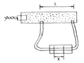
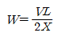
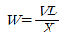
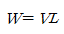
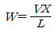
(정답률: 알수없음)
17. 둔감한 화약류를 확실히 폭굉시키는데 사용하는 폭약을 무엇이라 하는가?
- 작약
- 전폭약
- 점화점폭약
- 기폭약
(정답률: 알수없음)
18. 화약류 성능 및 시험방법에 대한 설명으로 옳은 것은?
- 화약류의 감도를 조사하기 위해 유발시험을 하였다.
- 폭속시험으로서 둔성폭약시험을 하였다.
- 탄광폭약의 안정도를 조사하기 위하여 강판시험을 하였다.
- 폭약의 위력을 조사하기 위하여 낙추시험을 하였다.
(정답률: 알수없음)
19. 다음 중 테트릴의 용도로 옳은 것은?
- 전폭약
- 기폭약
- 점화약
- 발사약
(정답률: 알수없음)
20. 다음 중 상황에 따른 폭약의 선정이 적절하지 않은 것은?
- 굳은 암석 : 정적효과가 큰 폭약
- 수분이 있는 장소 : 내수성 폭약
- 고온 막장 : 내열성 폭약
- 강도가 큰 암석 : 고에너지 폭약
(정답률: 알수없음)
2과목: 발파공학
21. 터널 면적과 천공지름에 따른 비천공장 및 비장약량에 대한 설명으로 틀린 것은?
- 터널 면적이 넓어질수록 비천공장은 감소한다.
- 터널 면적이 넓어질수록 비장약량은 감소한다.
- 천공지름이 클수록 비천공장은 짧아진다.
- 천공지름과 비장약량은 서로 무관하다.
(정답률: 알수없음)
22. 누두공 시험에 대한 문제점으로 틀린 것은?
- 장약을 위한 발파공이 강선으로 작용한다.
- 실험횟수를 많게 할 필요가 있지만 실제로는 그만큼 할 수가 없다.
- 소형의 모형실험으로 대신하기에는 어려움이 있다.
- 누두공의 형상은 환전한 원뿔형이 되기보다는 원뿔형에 가까운 형상을 할 때가 많다.
(정답률: 알수없음)
23. 소음의 전파에서 음원으로부터 20m지점의 지향지수가 SdB이라면 지향계수는 얼마인가?
- 3.16
- 4.16
- 5.36
- 6.31
(정답률: 알수없음)
24. 건설현장에서 규제기준 진동레벨이 100dB(V)일 때 진동노출시간을 고려하지 않을 경우 허용진동속도는 얼마인가? (단, 발파진동의 주파수는 SHz이상의 정현진동으로 간주하며 단위는 mm/s로 한다.)
- 29.11mm/s
- 30.11mm/s
- 31.11mm/s
- 32.11mm/s
(정답률: 알수없음)
25. 발파해체 공법 중 붕락시 구조물 중앙부는 수직붕괴가 일어나고 좌ㆍ우측부는 외측에서 내측으로 끌어 당겨 붕괴되도록 유도하는 공법으로 제약된 공간이나 도심지에서 주로 적용되는 것은?
- 단축붕괴공법
- 상부붕락공법
- 점진붕괴공법
- 내파공법
(정답률: 알수없음)
26. 계단높이가 10m, 계단폭이 25m, 암석계수가 0.4kg/m3인 암반에 천공격 75mm로 수평면과 수직으로 하향 천공하여 지발발파를 실시하고자 할 때, 최대저항선은 얼마인가? (단, 사용된 폭약은 ANFO이며, 발파공저부분의 장약집중도는 3.53kg/m이고, 최대저항선은 Langefors의 간편식으로 계산한다.)
- 2.43m
- 2.68m
- 3.15m
- 3.85m
(정답률: 알수없음)
27. 발파비용의 계산에 있어서는 단순히 암석의 발파뿐만 아니라 그 외의 모든 작업에서 생기는 원인들을 고려해야 하는데 다음 설명 중 옳은 것은?
- 공경이 클수록 단위체적당 천공비용은 늘어난다.
- 단위체적당 장약에 드는 비용은 공경이 클수록 줄어든다.
- 적재운반비용은 사용기기와 적재용량에 좌우되며 적재용량이 작을수록 비용은 줄어든다.
- 소할발파 비용은 발파 전체 비용 중 간접비에 해당하므로 발파비용의 계산에는 일반적으로 고려하지 않는다.
(정답률: 알수없음)
28. 수중현수 발파 시 수중압력의 최고치를 계산하는 식으로 옳은 것은? (단, Pm: 압력최고치, W: 폭약량(kg), D: 폭원으로부터의 거리, K: 정수, α: 감쇠지수)
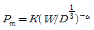
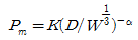
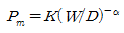
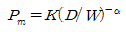
(정답률: 알수없음)
29. 지발당 장약량 1kg을 사용하여 시험발파를 실시하였다. 폭원으로부터 50m 거리에서 6mm/s, 100m에서 2mm/s의 지반진동속도가 계측되었다. 이 자료를 분석하여 자승근 환산식으로 발파진동 추정식을 도출했을 경우 기울기는?
- -1.58
- -1.85
- -1.97
- -2.00
(정답률: 알수없음)
30. 발파를 위한 천공작업을 할 때 준수하여야 할 사항으로 틀린 것은? (단, 발파작업표준 안전작업지침에 따른다.)
- 일차 발파된 지역에서의 천공은 전 지역에 폭파되지 않은 화약의 유무를 세밀히 조사하여 확인될 때까지 실시하여서는 안 된다.
- 천공작업으로 발생되는 먼지를 건식으로 제거하는 것을 원칙으로 한다.
- 천공작업과 장전작업은 일반적으로 동일한 지역에서 병행하여서는 안 된다.
- 불발된 장전구멍에서부터 15미터 이내에서는 동력기계를 이용한 천공작업을 하여서는 안 된다.
(정답률: 알수없음)
31. 발파계수(폭파계수) C값에 대한 설명으로 틀린 것은?
- 발파대상 암석의 발파에 대한 저항성이 클수록 C값은 커진다.
- 발파에 사용될 폭약의 위력이 클수록 C갑은 작아진다.
- 장약공의 밀폐(전색)상태가 완전할수록 C값은 커진다.
- C값은 표준장약발파 시 단위 부피의 암석을 발파하는데 필요한 장약량을 의미한다.
(정답률: 알수없음)
32. 소할발파에서 최소지름이 95cm인 암석에 천공법을 이용하여 150g의 폭약으로 시험 발파한 결과 표준장약 발파가 되었다. 이때 발파계수를 구하면?
- 0.001
- 0.014
- 0.017
- 0.020
(정답률: 알수없음)
33. 충격하중의 특성에 대한 설명으로 틀린 것은?
- 충격하중은 그 작용하는 물체 내부에 운동을 일으키지 않는다.
- 충격하중이란 하중이 순간적으로 극히 높은 유한치로 상승하였다가 그 후 급속히 감소되어가는 하중이다.
- 충격하중은 그 작용시간이 통상적으로 마이크로초나 밀리초 단위로 나타낼 정도의 것을 말한다.
- 충격하중에 의해 물체 내에 유발된 응력분포는 일반적으로 과도적이며 극히 국한된다.
(정답률: 알수없음)
34. 터널 발파에 있어 가장 중요한 것은 자유면을 증가시키기 위한 목적으로 실시되는 심빼기 발파이다. 다음 중 심빼기의 위치선정에 대한 설명으로 틀린 것은?
- 심빼기 위치는 터널막장 어느 장소에도 위치될 수 있다.
- 벽면에 밀착하여 위치시킬 경우, 천공수가 많아져 천공패턴을 이용하기 어려워진다.
- 심빼기 위치는 비산, 폭약소비량, 천공수 등에 영향을 미치게 된다.
- 막장의 상부에 심빼기를 위치시키면 많은 상향 채굴로 인해서 폭약소비량과 천공수가 많아지게 된다.
(정답률: 알수없음)
35. 발파 작업 시 발생되는 지반진동을 감소하기 위한 방법으로 틀린 것은?
- 대구경 발파는 소구경 발파에 비해 장약 밀도가 크면 진동이 크게 발생하므로 소구경을 사용하는 것이 조다.
- 최소 저항선이 너무 크거나 공저 장약이 많을 경우 진동의 발생이 크게 되므로 최소저항선을 적정하게 유지하여야 한다.
- 연암에는 폭속이 낮은 폭약을 사용하며, 경암에는 폭속이 높은 폭약을 사용한다.
- 지반진동 발생과 장약량은 비례하므로 표준발파에 비해 약장약을 하여 시행하여야 한다.
(정답률: 알수없음)
36. 비전기식 뇌관에 대한 설명으로 틀린 것은?
- 단발 전기뇌관과 도폭선 시스템의 장점을 택하여 조합한 형식이다.
- 뇌관 내부에 연시장치를 가지고 있으며 양호한 초시 정밀도로 단발발파를 할 수 있다.
- 전기발파와 같이 결선상태를 도통시험기나 저항시험기로 확인할 수 없다.
- 전기뇌관 보다 결선 작업이 복잡하고, 작업능률이 떨어진다.
(정답률: 알수없음)
37. 암석 약 1m3를 발파할 때 필요로 하는 폭약량으로 암석의 발파에 대한 저항성을 나타내는 계수는?
- 폭약계수
- 전색계수
- 반사계수
- 암석계수
(정답률: 알수없음)
38. 지름 30mm의 비트(bit)로 1.5m 길이를 천공하여 제발발파를 하려고 한다. 이때 발파공간의 거리는? (단, 장약길이(m)는 12d, 암석계수(g)는 0.015이다)
- 78cm
- 92cm
- 143cm
- 152cm
(정답률: 알수없음)
39. Trim Blasting에 대한 설명으로 틀린 것은?
- Trim Blasting은 주 발파부분을 점화한 후에 점화하는 것이다.
- 천공간격은 Pre-Splitting에서 보다 길게 한다.
- 저항선은 천공간격과 같거나 조금 짧게 한다.
- Trim Blasting은 주상장약밀도의 2~3배 정도로 공저에 집중장약 할 수 있다.
(정답률: 알수없음)
40. 발파 후 완전폭발이 되지 않고 발파공에 대한 잔류폭약이 발생하였다. 폭약의 순폭도가 저하되어 잔류한 것으로 조사되었는데 그 원인으로 틀린 것은?
- 약경의 과대
- 흡습에 의한 폭약의 고화
- 분말계 폭약의 비중 과대
- 장기저장에 의한 폭약의 변질
(정답률: 알수없음)
3과목: 암석역학
41. 암석의 강도를 측정하는 방법 중 점하중 강도시험에 대한 설명으로 틀린 것은?
- 점하중 강도시험은 현장 및 실험실에서 시험이 가능하다.
- 점하중 강도시험은 암석의 여러 가지 물성과 상관관계를 가지는 지표를 구하는 시험으로서 시험이 간편하다.
- 점하중 강도시험은 주로 일축압축강도를 구하는데 이용되나 이론적으로는 전단강도와 더 관련이 깊다.
- 점하중 강도시험은 동일지역에 존재하는 다양한 크기의 시료에 대해 10회 정도 실시하며, 점하중 강도지수는 최댓값과 최솟값을 제외한 나머지 값을 평균하여 결정한다.
(정답률: 알수없음)
42. 암석의 삼축압축시험 시 봉압의 증가에 따른 일반적인 현상으로 틀린 것은?
- 잔류강도가 증가한다.
- 삼축압축강도가 증가한다.
- 연성거동을 하게 되어 취성도가 감소한다.
- 연성파괴로 전이함에 따라 축변형량이 감소한다.
(정답률: 알수없음)
43. 탄성체 암반의 탄성계수의 크기가 30GPa이며, 푸아송 비가 0.25일 때 체적탄성계수(Bulk Modulus)의 크기는?
- 7.5GPa
- 20GPa
- 45GPa
- 120GPa
(정답률: 알수없음)
44. 수리전도도(Hydraulic conductivity)에 대한 설명으로 틀린 것은?
- 암반의 유체 통과 능력을 나타낸다.
- 수리전도도는 속도의 단위를 갖는다.
- 단위시간 동안 암반을 통과한 유량에 비례한다.
- 유체가 통과하는 매질의 특성(공극률, 결정입자의 형상 등)과는 관계가 없다.
(정답률: 알수없음)
45. 절리면의 압축강도(JCS)가 100MPa, 잔류마찰각이 20°인 절리면에 대해 경사시험(tilttest)을 실시한 결과 40°에서 상부 블록의 미끄러짐이 발생하고 그 순간 상부블록에 의해 절리면에 가해지는 수직응력이 1MPa인 경우 절리면의 거칠기 계수(JRC)는?
- 4
- 6
- 8
- 10
(정답률: 알수없음)
46. 암반 내에 전파되는 종파(P파), 횡파(S파) 및 레일리파(R파)에 대한 설명으로 틀린 것은?
- P파의 속도는 S파의 속도보다 빠르다.
- R파는 암석의 내부를 통해 전파된다.
- P파는 입자의 운동방향이 파의 전파방향과 같다.
- S파는 입자의 운동방향이 파의 전파방향과 수직이다.
(정답률: 알수없음)
47. 다음 중 초기응력 측정법이 아닌 것은?
- PS 검층법
- 응력해방법
- Flat jack법
- 수압파쇄시험법
(정답률: 알수없음)
48. 조사선(scanline) 조사를 통하지 않고 불연속면의 평균 간격을 간접적으로 구하고자 할 때 가장 유용한 자료는?
- RQD(암질지수)
- 블록의 평균부피
- GSI로 표현된 절리암반강도
- 불연속면 방향 분포의 평균 밀도
(정답률: 알수없음)
49. 다음 중 지하 액화가스비축공동에 사용되는 수장막(워터커텐)의 주요 기능에 대한 설명으로 옳은 것은?
- 공동 내 가스와 지하수를 분리하기 위해 설치한다.
- 가스가 공동외부로 유출되는 것을 막기 위해 설치한다.
- 공동내부로 이물질이 흘러들어가지 못하도록 설치한다.
- 공동의 천정에 접하도록 설치할 때가 가장 효율적이다.
(정답률: 알수없음)
50. GSI(Geological Strength Index)를 산정하기 위해 RMR(Rock Mass Rating)을 적용할 경우 암반에 대한 기본 가정으로 옳은 것은?
- RQD는 50%이하이다.
- 절리간격은 100mm이하이다.
- 암반은 완전히 건조한 상태이다.
- 절리가 매우 불리한 방향으로 발달되어 있다.
(정답률: 알수없음)
51. 푸아송 비 (poisson’s ratio)에 대한 설명으로 틀린 것은?
- 푸아송 비가 0이면 가압방향과 가압방향에 직각인 방향 모두 변형이 발생하지 않는다.
- 푸아송 비는 무차원이며, 암석은 0.1~0.3정도이다.
- 푸아송 비의 역수를 푸아송 수라 한다.
- 코르크(cork)는 푸아송 비가 0에 가깝기 때문에 축과 직각인 방향에는 거의 변형이 일어나지 않는다.
(정답률: 알수없음)
52. 직각 변형률 로제트(strain rosette)를 사용하여 측정한 변형률이 각각
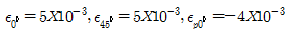
일 때 전단변형률(γxy)은?- 2X10-3
- 4X10-3
- 6X10-3
- 8X10-3
(정답률: 알수없음)
53. 암반의 강도 또는 변형 특성을 측정하기 위하여 적용되는 시험방법이 아닌 것은?
- Lugeon시험
- 평판재하시험
- 공내재하시험
- 원위치 전단시험
(정답률: 알수없음)
54. 다음 중 암석의 creep현상을 가장 잘 나타내주는 역학적 모형은?
- Voigt 물체
- Maxwell 물체
- Burgers 물체
- St. Venant 물체
(정답률: 알수없음)
55. 다음 중 중간주응력의 영향을 고려하는 암석 파괴이론은?
- Tresca 파괴이론
- Griffith 파괴이론
- Von Mises 파괴이론
- Mohr-Coulomb 파괴이론
(정답률: 알수없음)
56. 절리의 전단거동에서 무차원 전단강도-전단변위 모델의 의미에 대한 설명으로 틀린 것은?
- 절리면의 미끄러짐 시작과 동시에 전단변위와 비례하는 마찰저항이 발생한다.
- 절리면의 수직팽창은 JRC(mob)=0인 시점부터 시작된다.
- 정점전단변위 이후부터 JRC(mob)는 증가하고 이에 따라 수직팽창각도 점차 증가한다.
- 전단변위가 충분히 커졌을 때 JRC(mob)=0이 되어 잔류전단강도에 도달한다.
(정답률: 알수없음)
57. 암반분류법인 Q값을 이용한 터널의 지보량 산정을 위해서는 터널의 등가크기(equivalent dimension)가 계산되어야 하고 이를 위해서는 터널의 굴착지보비(Excavation Support Ratio)값이 선정되어야 한다. 다음 지하 암반시설들 중 굴착지보비 값이 가장 큰 것은?
- 지하 원자력 발전소
- 일시적인 광산 공동
- 지하 식품저장 시설
- 수력발전소의 수로터널
(정답률: 알수없음)
58. Mohr 응력원이 아래 그림과 같을 대 물체에 작용하는 응력상태는? (단, σ1=-σ3, σ2=0이다.)
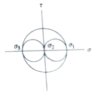
- 삼축압축상태
- 이축압축상태
- 순수인장상태
- 순수전단상태
(정답률: 알수없음)
59. Mohr-Coulomb 파괴식을 (σ=γ)좌표계에서 도시한 결과 점착력(c)이 10MPa, 내부마차각(ø)이 40°라면 주응력공간(σ1-σ3) 좌표계에 도시하였을 때의 일축압축강도는?
- 10.28MPa
- 28.28MPa
- 38.28MPa
- 42.89MPa
(정답률: 알수없음)
60. 다음 중 암반사면의 안정해석에 적용할 수 없는 방법은?
- 영향도표법
- 유한차분법
- 평사투영법
- 한계평형법
(정답률: 알수없음)
4과목: 화약류 안전관리 관계 법규
61. 다음 중 화약류관리보안책임자의 결격사유 대상이 아닌 사람은?
- 색맹이거나 색약인 사람
- 화약류관리보안책임자 면허를 갱신하지 않아 동 면허가 취소되어 1년이 지나지 않은 사람
- 총포ㆍ도검ㆍ화약류 등의 안전관리에 관한 법률을 위반하여 벌금 200만원을 선고받고 확정된 후 3년이 지나지 않은 사람
- 총포ㆍ도검ㆍ화약류 등의 안전관리에 관한 법률을 위반하여 금고 이상의 형의 집행유예를 선고받고 그 집행유예의 기간이 긑난 날로부터 1년이 지나지 않은 사람
(정답률: 알수없음)
62. 화약류(초유폭약 제외)발파의 기술상 기준에 대한 설명으로 옳지 않은 것은?
- 발파장소에서 휴대할 수 있는 화약류의 수량은 그 발파에 사용하고자 하는 예정량을 초과하지 아니할 것
- 한번 발파한 천공된 구멍에 다시 장전하지 아니할 것
- 발파준비작업이 끝난 후 화약류가 남는 때에는 지체없이 화약류 일시처치장에 반납할 것
- 온천공 그 밖의 섭씨 100도 이상의 고온 발파를 하고자 하는 때에는 화약류의 이상 분해를 방지하기 위한 조치를 할 것
(정답률: 알수없음)
63. 화약과 비슷한 추진적 폭발에 사용될 수 있는 것으로서 대통령령이 정하는 것에 포함되지 않는 것은?
- 산화구리를 주로 한 화약
- 과염소산염을 주로 한 화약
- 황산알루미늄을 주로 한 화약
- 크롬산납을 주로 한 화약
(정답률: 알수없음)
64. 화약류의 사용허가를 받지 아니하고 화약류를 발파 또는 연소시킨 사람의 처벌로 옳은 것은? (단, 광업법 및 대통령령에 의한 예외사항은 제외)
- 10년 이하의 징역 또는 2천만원 이하의 벌금의 형
- 5년 이하의 징역 또는 1천만원 이하의 벌금의 형
- 3년 이하의 징역 또는 700만원 이하의 벌금의 형
- 2년 이하의 징역 또는 500만원 이하의 벌금의 형
(정답률: 알수없음)
65. 화약류의 폐기에 관한 다음 설명 중 옳은 것은? (단, 제조업자가 제조과정에서 생긴 화약류를 그 제조소 안에서 폐기하는 경우는 제외)
- 폐기하고자 하는 곳을 관할하는 경찰서장에게 허가를 받아야 한다.
- 폐기하고자 하는 곳을 관할하는 경찰서장에게 신고를 하여야 한다.
- 폐기하고자 하는 곳을 관할하는 시ㆍ도경찰청장에게 허가를 받아야 한다.
- 폐기하고자 하는 곳을 관할하는 시ㆍ도경찰청장에게 신고를 하여야 한다.
(정답률: 알수없음)
66. 화약류 저장소 외의 장소에 저장할 수 있는 화약류의 수량으로 적합한 것은? (단, 판매업자가 판매를 위하여 저장하는 경우)
- 폭약 10kg
- 장난감용 꽃불류 25kg
- 도폭선 500m
- 미진동파쇄기 40개
(정답률: 알수없음)
67. 다음 중 화약류의 제조 및 판매업허가를 받을 수 없는 사람은?
- 상해죄로 징역 1년형을 선고받고 복역 후 만기 출소하여 2년 6월이 지난 사람
- 음주교통사고로 징역 6월에 집행유예 1년을 선고받고 아무런 행위 없이 25월이 경과한 사람
- 아버지가 한국인이시고, 어머니가 미국인으로서 한국국적을 가진 20세인 자
- 사업실패로 파산선고를 받았으나 복권되어 3월이 경과한 사람
(정답률: 알수없음)
68. 화약류 취급소의 설치기준으로 부적당한 것은?
- 단층 건물로서 철근 콘크리트조, 콘크리트블럭조 또는 이와 동등이상의 견고한 재료를 사용하여 도난이나 화재를 방지할 수 있는 구조로 설치할 것
- 문짝 외면에 두께 2mm 이상의 철판을 씌우고, 2중 자물쇠 장치를 할 것
- 건물 내면은 방습, 방수제인 페인트나 나무판자로 하고, 바닥 표면은 견고한 철판으로 할 것
- 지붕은 스레트, 기와 그 밖에 불에 타지 않는 재료를 사용할 것
(정답률: 알수없음)
69. 동일 차량에 함께 실을 수 있는 화약류를 나타낸 것으로 옳지 않은 것은?
- 폭약-포경용 신관
- 화약-실탄ㆍ공포탄
- 도폭선-공업용 뇌관
- 실탄ㆍ공포탄-신관(포경용 제외)
(정답률: 알수없음)
70. 화약류의 저장ㆍ취급방법으로 옳은 것은?
- 화약류는 절대로 저장소 이외의 장소에는 저장해서는 안된다.
- 저장소에서 화약류를 출고하고자 하는 때에는 저장기간이 최근인 것부터 먼저 출고할 것
- 저장 중인 다이나마이트 등의 약포에서 니트로글리세린이 스며나와 마루바닥이 오염된 때에는 물 15밀리리터에 수산화나트륨 100 그램을 녹이고 알코올 0.1리터를 혼합한 액체로 니트로글리세린을 분해시키고, 마른 걸레로 닦아낼 것
- 수중저장소에 가루로 된 화약류를 저장시에는 15%정도의 물기를 머금게 하고, 물이 스며들 수 없게 포장하여 나무상자에 넣고, 덩어리 화약류는 물에 항상 잠긴 상태로 저장한다.
(정답률: 알수없음)
71. 전기발파를 하는 때에 화약류 장전장소로부터 도통시험을 할 수 있는 최소 안전거리는?
- 50m
- 30m
- 20m
- 10m
(정답률: 알수없음)
72. 화약류 저장소가 보안거리 미달로 보안물건을 침범했을 경우 행정처분기준으로 맞는 것은?
- 허가취소
- 6개월 효력정지
- 3개월 효력정지
- 감량 또는 이전명령
(정답률: 알수없음)
73. 화약 및 화공품의 종류에 따라 폭약 1톤으로 환산하는 수량으로 옳지 않은 것은?
- 총용뇌관 250만개
- 실탄 또는 공포탄 200만개
- 신관 또는 화관 10만개
- 도폭선 50km
(정답률: 알수없음)
74. 폭약과 비슷한 파괴적 폭발에 사용될 수 있는 것으로 대통령령에서 정한 면약의 질소 함량은?
- 8.2% 이상
- 10.2% 이상
- 12.2% 이상
- 14.2% 이상
(정답률: 알수없음)
75. 화약류 저장소의 종류는 몇 개로 구분되는가?
- 10개
- 9개
- 6개
- 5개
(정답률: 알수없음)
76. 화약류의 소지사용자가 발파 또는 연소에 관한 기술기준을 3회 위반하였을 때의 행정 처분기준으로 옳은 것은?
- 경고
- 효력정지 15일
- 효력정지 1월
- 효력정지 3월
(정답률: 알수없음)
77. 경찰서장은 화약류 폐기의 장소ㆍ일시ㆍ수량 또는 방법 등이 적당하지 아니하거나 공공의 안전유지에 지장이 있다고 인정되는 경우에는 그 화약류 폐기의 중지를 명하거나 보완하여 폐기할 것을 명할 수 있다. 이러한 명령을 위반한 자에 대한 과태로 기준으로 옳은 것은?
- 1천만원 이하
- 700만원 이하
- 500만원 이하
- 300만원 이하
(정답률: 알수없음)
78. 다음 중 화약류의 양도ㆍ양수허가와 관련한 설명으로 옳지 않은 것은?
- 사용지가 특정되지 아니한 경우에는 양수하고자 하는 사람의 주소지를 관할하는 시ㆍ도 경찰청장의 허가를 받아야 한다.
- 제조업자가 제조할 목적으로 화약류를 양수하거나 제조한 화약류를 양도하는 경우 양도ㆍ양수허가가 필요 없다.
- 화약류의 수출입허가를 받은 사람이 화약류의 수출입과 관련하여 화약류를 양도ㆍ양수하는 경우에는 양도ㆍ양수허가가 필요 없다.
- 화약류의 제조업ㆍ판매업 또는 화약류 저장소를 양도ㆍ양수하는 경우에는 양도ㆍ양수허가가 필요 없다.
(정답률: 알수없음)
79. 화약류관리보안책임자의 선임기준에 대한 연결이 옳지 않은 것은?
- 연중 40톤 이상의 폭약저장소의 설치자-1급 화약류관리보안책임자 면허취득자
- 연중 40톤 미만의 폭약저장소의 설치자-1급 또는 2급 화약류관리보안책임자 면허취득자
- 월중 2톤 이상의 폭약 사용자-1급 화약류관리보안책임자 면허취득자
- 곷불류 및 장난감꽃불류 저장소의 설치자-2급 또는 3급 화약류관리보안책임자 면허취득자
(정답률: 알수없음)
80. 총포ㆍ도검ㆍ화약류 등의 안전관리에 관한 법령상 다음 ( )안에 알맞은 내용은?
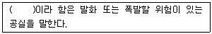
- 화약류 일시저치장
- 위험공실
- 정체량
- 보안물건
(정답률: 알수없음)
5과목: 굴착공학
81. 쇄설성 퇴적암에 해당하는 것은?
- 셰일
- 쳐트
- 대리암
- 석회암
(정답률: 알수없음)
82. NATM 공법에서의 시공 순서가 바르게 나열된 것은?
- 천공→발파→버럭처리→환기→숏크리트→록볼트→계기측정
- 천공→발파→환기→버럭처리→숏크리트→록볼트→계기측정
- 천공→발파→버럭처리→숏크리트→록볼트→환기→계기측정
- 천공→발파→록볼트→숏크리트→버럭처리→환기→계기측정
(정답률: 알수없음)
83. 다음 중 암반분류법인 RMR분류에서 조사항목이 아닌 것은?
- RQD
- 탄성파 속도
- 암석의 강도
- 불연속면의 간격
(정답률: 알수없음)
84. 암반의 공학적 분류 방법 중 RSR(Rock Structure Rating)법에서 사용하는 기본 변수가 아닌 것은?
- 지하수
- 암바의 응력
- 불연속면의 형태
- 지질 및 암반 구조
(정답률: 알수없음)
85. 다음 중 터널의 안정성을 확보하기 위하여 설치하는 콘크리트 라이닝의 미세 균열 발생 원인이 아닌 것은?
- 콘크리트 건조에 따른 수축
- 콘크리트 온도 강하에 따른 수축
- 1차, 2차 콘크리트 라이닝을 절연할 때
- 터널 주변 지반의 상황 변화에 따라 하중이 증가할 때
(정답률: 알수없음)
86. 연약한 점토지반(내부마찰각 0°)의 단위중량은 16KN/m3, 점착력은 20KN/m2이다. 이 지반을 연직으로 2m 굴착할 때 연직사면의 안전율은?
- 2.0
- 2.5
- 3.0
- 3.5
(정답률: 알수없음)
87. 암질지수(RQD, Rock Quality Designation)의 값을 추정하기 위하여 사용되는 값은?
- 암반 단위 체적당 절리의 개수
- 암반 단위 면적당 절리의 개수
- 암반 단위 면적당 총 절리길이
- 암반 표면의 조사선과 만나는 절리의 개수
(정답률: 알수없음)
88. 터널의 내공변위 및 천단침하 측정으로부터 얻을 수 있는 정보가 아닌 것은?
- 암반안정의 판단
- 최종 변위량의 예측
- 절리나 균열의 간격 및 발달형태
- 2차 복공 콘크리트의 타설시기에 대한 판단
(정답률: 알수없음)
89. 흙의 습윤단위중량이 20KN/m3이고 함수비가 16.0%이다. 이 흙의 비중이 2.65라고 할 때 건조단위중량, 공극비, 포화도는 얼마인가? (단, 물의 단위중량은 9.81KN/m3이다.)
- 17KN/m3, 0.51, 75.7%
- 17KN/m3, 0.56, 83.1%
- 17.2KN/m3, 0.51, 83.1%
- 17.2KN/m3, 0.56, 75.7%
(정답률: 알수없음)
90. 주동토압계수(Ka)가 1/3인 경우 Rankine의 토압이론에 의한 수동토압계수(Kp)는?
- 1.0
- 2.0
- 3.0
- 4.0
(정답률: 알수없음)
91. 지하굴착 시 기설구조물 바로 아래 또는 부근을 굴착하는 경우 구조물 기초의 지지력이 저하되어 안정이 손상될 우려가 있기 때문에 지반의 개량, 기초보강, 개조 등을 실시하여 구조물의 안전을 도모하고자 할 때 실시하는 공법은?
- 언더피닝 공법
- 트렌치 공법
- 메세르 공법
- 역권 공법
(정답률: 알수없음)
92. 그림과 같이 지표면과 평행한 면의 깊이 3m되는 점에 작용하는 단위 폭당 전단응력은?
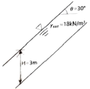
- 23.4KN/m2
- 2.34KN/m2
- 46.8KN/m2
- 4.68KN/m2
(정답률: 알수없음)
93. 직경 5m의 원형터널 내벽에 두께 4cm의 숏크리트를 타설할 경우, 이 숏크리트가 발휘할 수 있는 최대 지보압(maximum support pressure)은? (단, 숏크리트의 일축압축강도는 20MPa이다.)
- 0.12MPa
- 0.24MPa
- 0.32MPa
- 0.48MPa
(정답률: 알수없음)
94. 암반사면의 전도파괴(Toppling)발생 조건에서 전도 영역에 속하는 것은? (단, 사면의 경사각은 α, 블록 저면과 사면과의 마찰각은 ø, 블록의 폭은 b, 블록의 높이는 h이다.)
- α＜ø,b/h＞tanα
- α＞ø,b/h＞tanα
- α＜ø,b/h＜tanα
- α＞ø,b/h＜tanα
(정답률: 알수없음)
95. 전단면 굴착기인 TBM에 대한 설명으로 틀린 것은?
- 연암, 중경암에서 경제적
- 진동, 균열의 발생 감소
- 여굴 및 라이닝의 감소
- 원지반 조건 변화에 대처 용이
(정답률: 알수없음)
96. 다음 NATM 보조공법 중 배수공법이 아닌 것은?
- 물빼기시추공법
- Deep well 공법
- Well point 공법
- 약액주입공법
(정답률: 알수없음)
97. 다음 지하공간시설 중 일반적으로 가장 깊은 심도에 설치되어야 하는 것은?
- 수력발전소
- 압축공기 저장시설
- 산업폐기물 처리장
- 농수산물 냉장, 냉동 저장소
(정답률: 알수없음)
98. 다음 중 일상의 시공관리를 위해 반드시 실시해야 하는 터널 계측관리 항목(일상계측)에 해당하는 것은?
- 천단침하 측정
- 지중변위 측정
- 록볼트 축력 측정
- 콘크리트 라이닝 응력 측정
(정답률: 알수없음)
99. 타원형의 단면을 갖는 암반 터널에서 타원의 장축방향으로 작용하는 초기 수직응력과 단축방향으로 작용하는 초기 수평응력의 크기가 10MPa로 동일한 경우 터널 바닥면에 발생하는 접선응력의 크기는 얼마인가? (단, 타원의 장축방향의 반경은 단축방향의 반경의 2배이다.)
- 10MPa
- 20MPa
- 30MPa
- 40MPa
(정답률: 알수없음)
100. 높이가 6m인 수직 옹벽에 대하여 단위 폭당 벽에 작용하는 Rankine 전주동토압은? (단, 지반의 단위 중량은 20KN/m3, 점착력은 0KN/m2, 내부마찰각은 30°이다.)
- 67.5KN/m
- 120KN/m
- 127.5KN/m
- 180KN/m
(정답률: 알수없음)